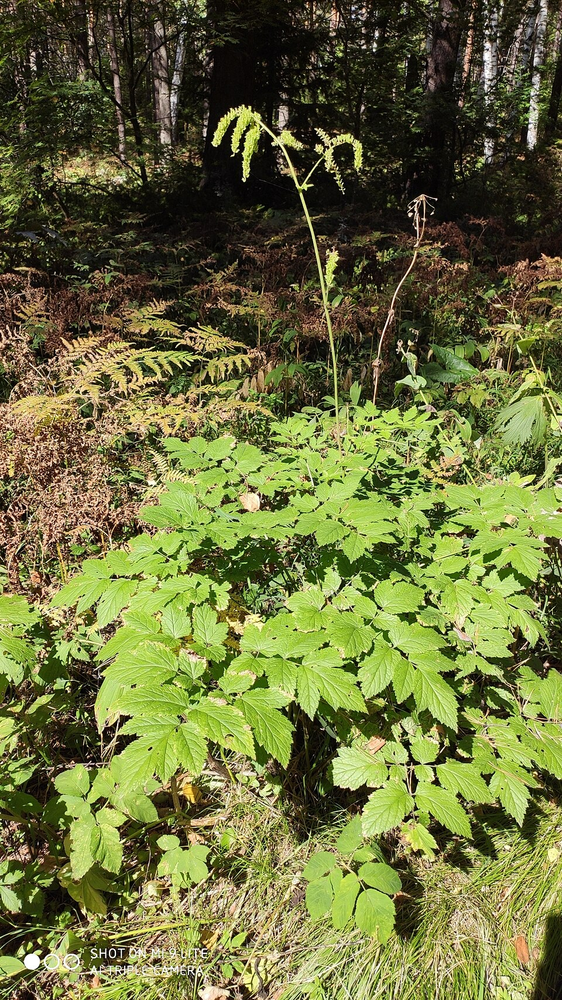
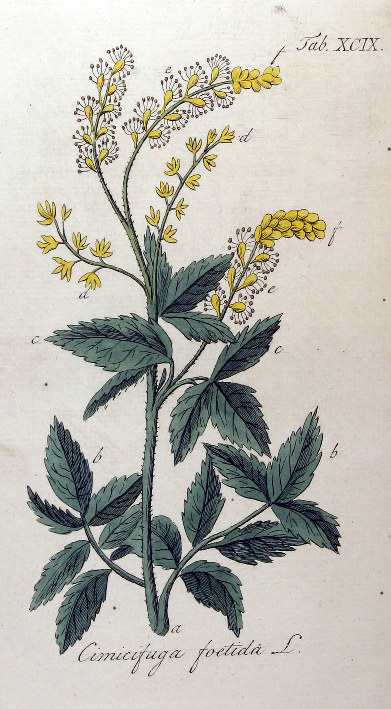

Shēngmá · Cimicifuga rhizome升麻
Cimicifugae Rhizoma · Exterior-releasing herbs: wind-heat-releasing herbsCimicifugae Rhizoma · 解表药·发散风热药




- Flavour · nature性味
- English version coming辛、微甘，微寒
- Channels归经
- Lung, Spleen, Stomach, Large Intestine肺、脾、胃、大肠经
- Direction升降浮沉
- Light, ascending, and dispersing, with a particular ability to raise clear yang. Its ascending and dispersing action is used to release the exterior, promote the eruption of rashes, and clear heat and toxins; its lifting action is used for sinking yang. Its dispersing nature calls for caution in people with yin deficiency, yang hyperactivity, or upward-rebellious qi.轻扬升散，善于升举清阳；发表透疹、清热解毒时取其升散之性，升阳举陷时取其升提之功。升麻升散之力较强，阴虚阳亢、气机上逆者应慎用。
- Toxicity毒性
- Non-toxic无毒
- Dose (pharmacopoeia)用量（药典）
- 3–10 g (ceiling 10 g)（上限 10 克）
Taken as a decoction. Use the raw herb to release the exterior, promote eruptions, and clear heat and toxins; use the honey-fried herb to raise sinking yang. A qualified practitioner should determine the appropriate dose according to the pattern, formula, and individual circumstances.煎服。发表透疹、清热解毒宜生用；升阳举陷宜炙用。具体剂量应结合配伍、证候及个体情况由合格中医师确定。 - Pregnancy孕期
- Caution in pregnancy孕妇慎用 The 2020 Chinese Pharmacopoeia entry for Sheng Ma has no precautions section, and the textbook does not list pregnancy as a contraindication. This site still advises caution, because Health Canada's TCMI monograph requires every product it covers to warn against use during pregnancy or breastfeeding. Do not self-administer it while pregnant or breastfeeding. A missing pharmacopoeial entry does not prove safety in pregnancy.《中国药典》2020 年版升麻项下未设「注意」，教材也未把孕妇列为禁用；本站孕期从严按慎用，依据是加拿大卫生部 TCMI 专论要求全部收录产品标注孕期或哺乳期勿用。孕期与哺乳期不要自行使用。药典未列不等于已证明孕期安全。
- Health Canada加拿大卫生部
- Health Canada: monograph加拿大卫生部：有专论 Health Canada's Natural Health Products Ingredients Database TCMI monograph lists three botanical sources as Sheng Ma (Rhizoma Cimicifugae): Actaea dahurica, Actaea foetida, and Actaea heracleifolia. All three are included in Table 1 as general medicinal ingredients. This listing indicates that ingredient information is available; it does not mean that every product containing Sheng Ma is approved or holds the same market authorization. The monograph requires product labelling to state: do not use during pregnancy or breastfeeding; consult a healthcare professional before use if taking prescription medicines or if suffering from a serious disease or acute infection; and stop use and seek medical attention if symptoms persist or worsen. These three ingredients are listed in Table 1 and should not be misidentified as restricted Table 3 or Table 4 ingredients.加拿大卫生部 NHPID 的 Traditional Chinese Medicine Ingredients（TCMI）专论将以下三种基原收录为 Sheng ma（Rhizoma Cimicifugae）：Actaea dahurica、Actaea foetida、Actaea heracleifolia，均列于 Table 1（general medicinal ingredients，一般药用成分）。该收录表示这些成分有相应的专论资料，不代表所有含升麻产品均已获批或具有相同的上市许可。专论要求产品标注：孕期或哺乳期勿用；正在服用处方药、患有严重疾病或急性感染者，使用前咨询医务人员；症状持续或加重时停止使用并就医。本专论所列三种成分属于 Table 1，不应误写为 Table 3 或 Table 4 的受限制成分。
- Conservation资源与保护
- The three pharmacopoeial source species of Sheng Ma are not among the endangered or prohibited medicinal materials listed here, such as rhinoceros horn, tiger bone, pangolin scales, musk, or bear bile. The available sources do not establish their international trade protection status or the specific conservation status of wild populations, so no further conservation classification is inferred.升麻的三个药典基原物种均不是本档所列犀角、虎骨、穿山甲、麝香、熊胆等濒危或禁用药材。本次可用来源没有提供足以确认其国际贸易保护级别或具体野生种群保护等级的资料，不据此推断其资源状态。
- Source来源
- Cimicifuga foetida L.; Cimicifuga dahurica (Turcz.) Maxim.; Cimicifuga heracleifolia Kom.. Dried rhizomes of Cimicifuga foetida, Cimicifuga dahurica, or Cimicifuga heracleifolia, family RanunculaceaeCimicifuga foetida L.（升麻）；Cimicifuga dahurica (Turcz.) Maxim.（兴安升麻）；Cimicifuga heracleifolia Kom.（大三叶升麻）。毛茛科植物升麻、兴安升麻或大三叶升麻的干燥根茎
Traditional actions and indications功效与主治（传统）
🏛 Traditional statements, not efficacy claims; the modern evidence is graded further down.以下为传统说法，不是疗效主张；现代证据见下文分级。
- Releases the exterior and promotes the eruption of rashes发表透疹
- Clears heat and resolves toxins清热解毒
- Raises and lifts yang qi升举阳气
Wind-heat headache; early measles with an incomplete or difficult eruption; toothache, oral ulcers, and sore throat with swelling; macular eruptions associated with yang toxicity; and prolapse conditions associated with sinking middle qi, including chronic diarrhoea with rectal prolapse, uterine prolapse, and gastric prolapse. Its three principal traditional applications are releasing the exterior and promoting eruptions, clearing heat and toxins, and raising sinking yang.风热头痛；麻疹初起、疹出不畅；齿痛、口疮、咽喉肿痛；阳毒发斑；中气下陷所致的久泻脱肛、子宫脱垂、胃下垂等脏器脱垂。发表透疹、清热解毒与升阳举陷为三大主要应用方向。
How to recognise it怎么认
Growing植株 A perennial herb with a stout underground rhizome, usually irregularly shaped or nodular, bearing traces of old leaf bases and root scars. The aerial stem is erect. Leaves are large and compound, commonly divided into two or three pinnate orders or palmately divided, with toothed margins. Small white or yellowish-white flowers occur in terminal panicle-like racemes from summer into autumn. The fruit consists of follicles. The three accepted source species differ in leaf morphology, plant size, and inflorescence characteristics; species identification should use botanical diagnostic features rather than rhizome appearance alone.多年生草本植物。地下根茎粗壮，呈不规则块状或结节状，表面可见残留的叶基及根痕。地上茎直立，叶为大型复叶，通常呈二至三回羽状分裂或掌状分裂，叶缘有锯齿；花序为顶生圆锥状总状花序，花小，白色或黄白色，花期夏季至秋季。果实为蓇葖果。三种基原植物在叶片形态、植株大小及花序等方面存在差异，鉴定时应结合植物分类特征，不能仅凭根茎外观确定物种。
Decoction pieces饮片 The crude slices are usually irregular thick pieces or short segments. The outer surface is grey-brown, dark brown, or brown, rough, and marked by longitudinal grooves, fibrous-root scars, and sometimes remnants of stem bases and leaf scars. The cut surface ranges from yellowish-green to pale yellowish-white, often showing radial markings and distinct woody structures. The material is hard and difficult to break, with a fibrous fracture. It has a faint odour and a slightly bitter, astringent taste. Appearance and internal markings may vary among the three source species.饮片多呈不规则厚片或短段，外表面灰褐色、黑褐色至棕褐色，粗糙，有纵沟纹及须根痕，可见残留的茎基和叶痕。切面黄绿色至淡黄白色，常可见放射状纹理及明显的木质部结构，质地坚硬，不易折断。断面纤维性，气微，味微苦而涩。不同来源植物的饮片在断面色泽、纹理及形态上可有差别。
No photo of the rhizome slices found on Commons (2026-11-25).缺升麻饮片照（Commons 11-25 未检到）。
Processing炮制
- Raw Sheng Ma生升麻：: Unprocessed Sheng Ma is primarily used to release the exterior, promote the eruption of rashes, and clear heat and toxins. Traditional applications include wind-heat headache, sore throat, and measles with an incomplete eruption.未经蜜炙，偏于发表透疹、清热解毒，常用于风热头痛、咽喉肿痛及麻疹透发不畅。
- Honey-fried Sheng Ma炙升麻（蜜炙）：: Honey-fried Sheng Ma is traditionally used primarily to raise sinking yang, including prolapse conditions associated with insufficient middle qi and failure of clear yang to ascend.蜜炙后偏于升阳举陷，传统用于中气不足、清阳不升所致的脏器下垂等证。
Cautions and incompatibilities使用注意与配伍禁忌
Use cautiously once measles has fully erupted, and in people with yin deficiency and yang hyperactivity, excess above with deficiency below, or fire arising from yin deficiency. Because Sheng Ma has an ascending and dispersing nature, clinical use requires appropriate pattern differentiation. Do not self-administer during pregnancy or breastfeeding; Health Canada's relevant monograph explicitly advises against use during these periods. The pharmacopoeia does not classify this herb as toxic or slightly toxic, which does not establish the safety of excessive or prolonged use. The pharmacopoeial daily dose is 3–10 g; the safety and appropriateness of doses above this range remain unverified.麻疹已经透发者慎用；阴虚阳亢、上盛下虚及阴虚火旺者慎用。升麻具有升散之性，临床应用应辨证，避免不适当使用。孕期及哺乳期应避免自行使用；加拿大卫生部相关专论明确要求孕期或哺乳期勿用。药典未将本品列为有毒或小毒药物，因此不能据此推断超量、长期使用已经证明安全。药典规定剂量为每日3–10克；超出该范围的安全性与适宜性待核。
Interactions with medicines与西药的相互作用
The available sources do not provide sufficient evidence to establish clinical interactions between the Sheng Ma crude herb and specific Western medicines. Research on antioxidant interactions between Astragalus and Sheng Ma does not establish an interaction between Sheng Ma and Western medicines. Experimental studies of Sheng Ma extracts or isolated compounds also cannot establish clinical interactions between the crude herb and prescription drugs. Health Canada advises people taking prescription medicines to consult a healthcare professional before use.本次提供的可用来源中，没有足以确认升麻饮片与具体西药之间临床相互作用的证据。有关黄芪与升麻的抗氧化成分相互作用研究，不属于升麻与西药的相互作用证据；升麻提取物或单体成分的实验研究也不能直接推断为本饮片与处方药之间存在临床相互作用。加拿大卫生部要求正在服用处方药者使用前咨询医务人员。
Modern research, graded现代研究（分级）
- E2 A randomized controlled clinical study in women evaluated the efficacy and safety of a Cimicifuga foetida extract for menopausal syndrome. The abstract concluded that the extract was effective and safe for menopausal syndrome in Chinese women. The intervention was a plant extract, not a decoction of pharmacopoeial Sheng Ma slices, so the findings cannot be directly generalized to the clinical efficacy or safety of the crude herb.一项以女性为对象的随机对照临床研究考察了升麻（Cimicifuga foetida）提取物用于更年期综合征的疗效与安全性；论文摘要结论称该提取物对中国女性更年期综合征有效且安全。研究对象为植物提取物，并非药典规定剂量的升麻饮片煎剂，不能直接外推为饮片的临床疗效或安全性结论。
- E2 A comparative study in early postmenopausal women examined breast pain associated with Cimicifuga foetida extract and different hormone therapy regimens. The abstract reported that after six months of extract use, the incidence and duration of breast pain were lower than in the estradiol plus cyclic medroxyprogesterone acetate group or the other hormone regimen, and did not change over time. The intervention was an extract, not a decoction of Sheng Ma slices, and these findings do not establish equivalent effects for the crude herb or replace appropriate medical assessment of menopausal symptoms.一项针对早期绝经后女性的比较研究考察了 Cimicifuga foetida 提取物与不同激素治疗方案相关的乳房疼痛情况；摘要报告，使用该提取物六个月后，乳房疼痛发生率和持续时间低于雌二醇联合周期性醋酸甲羟孕酮或另一激素方案组，且未随时间改变。研究对象为提取物，不能将结果直接等同于升麻饮片煎剂的效果，也不能据此替代规范的绝经期医疗评估。
In the classics古籍原文
「升麻味甘平。主解百毒，殺百精老物殃鬼，辟溫疫瘴邪蠱毒。久服不夭，輕身長年，一名周升麻。生山谷。」——神农本草经
Shennong Bencao Jing (Divine Farmer's Materia Medica)
The Shennong Bencao Jing records Sheng Ma as being used to resolve various toxins and to ward off epidemic disorders, miasmatic influences, and harmful influences associated with parasitic toxins. Its statements about prolonged use, longevity, and lightness of the body are historical materia medica claims, not modern evidence of long-term safety or life extension.《神农本草经》记载升麻「主解百毒」，并提到辟温疫、瘴邪及蛊毒，反映其早期本草认识中的解毒与辟邪用途。古籍所载「久服不夭，轻身长年」属于传统本草记述，不应作为现代长期服用的安全性或延年益寿证据。
Where it is used: the web串联：它在哪些方里、连到哪里
Later formulas (Song to Qing)时方（宋元明清）
| Formula方 | Role角色 | Dose: original / today剂量：原书／今用 | Partners in the formula同方配伍 |
|---|---|---|---|
| Cimicifuga and Pueraria Decoction升麻葛根汤 | Monarch君 | original text: see the Chinese original三錢 | Gégēn (Kudzu root)葛根 · Báisháo (White peony root)白芍 · Gāncǎo (Licorice root)甘草 |
| Tonify the Middle and Augment the Qi Decoction补中益气汤 | Envoy使 | original text: see the Chinese original原文未注 | Huángqí (Astragalus root)黄芪 · Rénshēn (Ginseng (Asian))人参 · White atractylodes rhizome (Bai Zhu)白术 · Gāncǎo (Licorice root)甘草 · Dāngguī (Chinese Angelica Root)当归 · Chénpí (Dried tangerine peel)陈皮 · Cháihú (Bupleurum root)柴胡 |
| Stomach-Clearing Powder清胃散 | Envoy使 | original text: see the Chinese original原文未注 | Shēngdìhuáng (raw rehmannia root)生地黄 · Mǔdānpí (Moutan Bark)牡丹皮 · Huánglián (coptis rhizome)黄连 · Dāngguī (Chinese Angelica Root)当归 |
Folk and single-herb remedies偏方、验方、单方
| Formula方 | Use用法 | Self-use能否自用 |
|---|---|---|
| Cimicifuga ground with vinegar applied topically (sudden toxic swelling)升麻磨醋涂（猝肿毒起） | External use外用 | See a doctor first先看医生再说 |
Patterns reached through these formulas经由这些方连到的证
- Spleen deficiency with sinking qi脾虚气陷 ← Tonify the Middle and Augment the Qi Decoction补中益气汤Qigong功法 Baduanjin (Eight Pieces of Brocade)八段锦 · Yijinjing (Sinew-changing exercises)易筋经
- Stomach fire toothache胃火牙痛（胃有积热） ← Stomach-Clearing Powder清胃散Qigong功法 Liuzijue (Six Healing Sounds)六字诀
- Early measles with rash failing to come out麻疹初起、疹发不出 ← Cimicifuga and Pueraria Decoction升麻葛根汤
Exam notes (HER)考点（HER）
HER essentials: (1) classified as a wind-heat-releasing exterior herb; (2) pungent and slightly sweet in flavour, slightly cold in nature, entering the Lung, Spleen, Stomach, and Large Intestine channels; (3) three principal actions: releasing the exterior and promoting eruptions, clearing heat and toxins, and raising sinking yang; (4) raw material is used mainly for exterior release, rash eruption, and clearing heat, while honey-fried material is used mainly for raising sinking yang; (5) pharmacopoeial dose of 3–10 g; (6) raises clear yang and is traditionally combined with Bupleurum in patterns of sinking middle qi, with appropriate pattern differentiation; (7) use cautiously after measles has fully erupted and in yin deficiency with yang hyperactivity, excess above with deficiency below, or fire from yin deficiency; (8) Health Canada's TCMI lists Actaea dahurica, A. foetida, and A. heracleifolia in Table 1 and requires warnings against use during pregnancy and breastfeeding.HER 重点：①分类为解表药中的发散风热药；②性味辛、微甘，微寒，归肺、脾、胃、大肠经；③三项核心功效为发表透疹、清热解毒、升举阳气；④生用偏发表透疹、清热解毒，炙用偏升阳举陷；⑤药典用量3–10克；⑥升麻善于升举清阳，常与柴胡等配伍用于中气下陷，但须辨证；⑦麻疹已透及阴虚阳亢、上盛下虚、阴虚火旺者慎用；⑧加拿大卫生部 TCMI 将 Actaea dahurica、A. foetida、A. heracleifolia 列入 Table 1，并要求孕期、哺乳期勿用。
Sources依据
- Chinese Pharmacopoeia Commission. Pharmacopoeia of the People's Republic of China, 2020 edition, vol. I国家药典委员会《中华人民共和国药典》2020 年版一部
- Zhong Gansheng (ed.). Chinese Materia Medica (national TCM higher-education textbook series)钟赣生主编《中药学》（全国中医药行业高等教育规划教材）
- Health Canada, NHPID monograph: Traditional Chinese Medicine Ingredients (TCMI), May 29, 2026 ↗
- Zheng et al. Efficacy and safety of Cimicifuga foetida extract on menopausal syndrome in Chinese women. Chin Med J (Engl). 2013 ↗
- Wang et al. Comparison Of Cimicifuga foetida extract and different hormone therapies regarding in causing breast pain in early postmenopausal women. Gynecol Endocrinol. 2019 ↗
- Wang et al. Investigation of antioxidant interactions between Radix Astragali and Cimicifuga foetida and identification of synergistic antioxidant compounds. PLoS One. 2014 ↗
- Wang et al. Antiviral effect of cimicifugin from Cimicifuga foetida against human respiratory syncytial virus. Am J Chin Med. 2012 ↗
- Lu et al. Studies on the constituents of Cimicifuga foetida collected in Guizhou Province and their cytotoxic activities. Chem Pharm Bull (Tokyo). 2012 ↗
- Miao et al. Cimicifuga heracleifolia is therapeutically similar to black cohosh in relieving menopausal symptoms: evidence from pharmacological and metabolomics studies. Chin J Nat Med. 2019 ↗